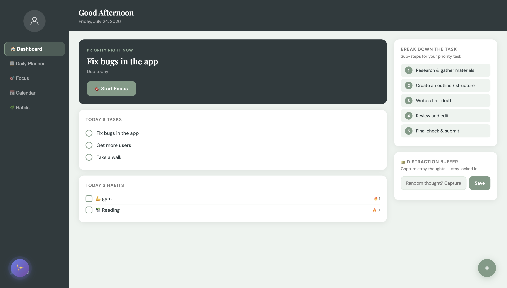
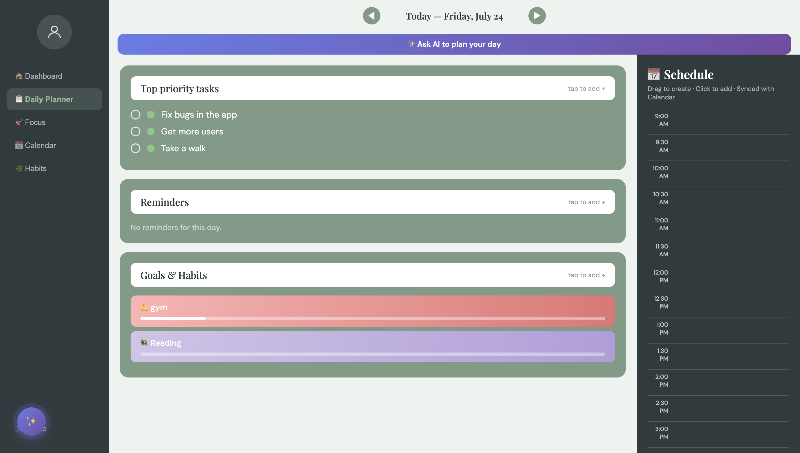
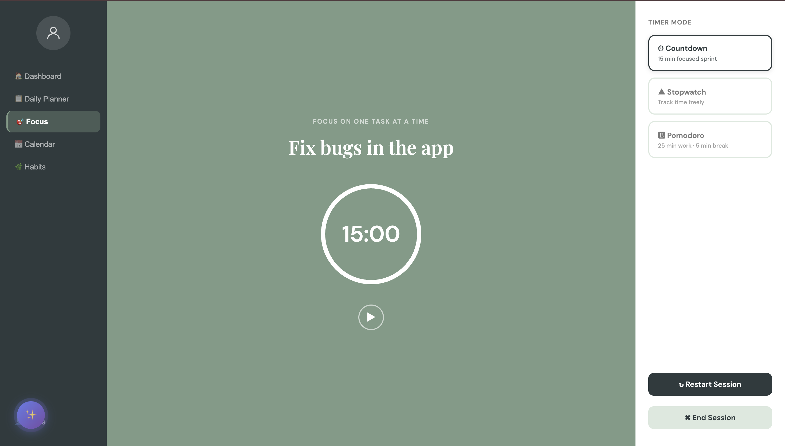
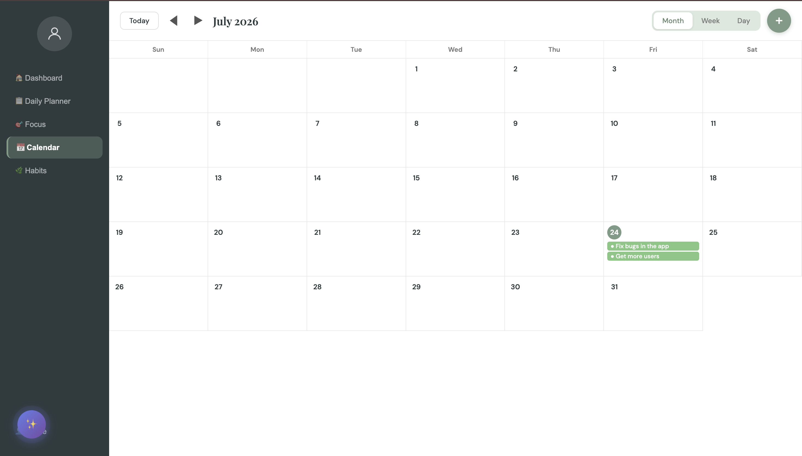
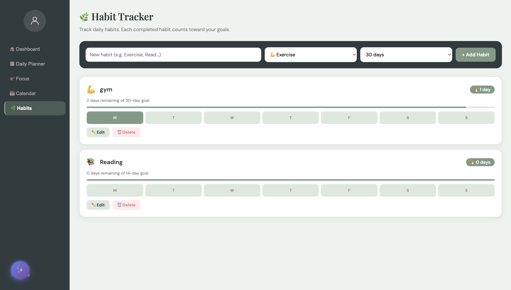

For students and chronic procrastinators struggling with ADHD-like task paralysis, traditional productivity tools fail because they increase cognitive overhead. When trying to work, two primary friction points destroy focus:
1. Intimidating Tasks & Context Switching: Broad goals (e.g., "Write Essay") feel overwhelming without clear micro-steps. Furthermore, while attempting to work, random thoughts pop up ("Buy groceries", "Check email"), causing users to switch context, open 100 browser tabs, and lose track of their core objective.
2. Tool Fragmentation: Existing tools isolate tasks, habit tracking, scheduling, and timers across four different apps, requiring users to constantly jump between interfaces just to structure their day.
The primary insight gained from professor interviews was that existing student productivity platforms fail because they treat tasks, calendar events, habits, and focus sessions as isolated silos. A student cannot effectively plan a day without seeing their daily schedule side-by-side with their habit goals and active priorities.
This led to the creation of a unified daily planner engine that aggregates reminders, habit streaks, calendar timelines, and task execution in a single viewport.
The home dashboard establishes immediate clarity by displaying only today's priority items. To combat "tab-splurge" and distraction-driven context switching, the Distraction Buffer allows users to instantly dump stray thoughts into a quick-capture box without leaving their active task workflow.

Additionally, large goals automatically trigger the Task Breakdown Engine, decomposing overwhelming tasks into manageable sub-steps to reduce execution friction.
Designed based on academic feedback, the Daily Planner brings Top Priorities, System Reminders, Goal/Habit progress bars, and a Drag-and-Drop Schedule into a single synchronized view.

Users can trigger AI day-planning assistance to automatically map out scheduled blocks based on priority tasks and habits.
To support different deep-work styles, the Focus execution screen provides three distinct timer modalities (Countdown Sprint, Stopwatch, and 25m/5m Pomodoro) paired with a clean, zero-distraction layout centered entirely around the active priority.

A high-level calendar interface allowing users to map out long-term assignment deadlines, project targets, and monthly milestones synced directly with daily task scheduling.

Built-in visual streak tracking for recurring daily habits (e.g., Gym, Reading). Progress bars and streak indicators incentivize daily consistency without needing external habit apps.

Built as a high-performance web application deployed directly on Azure Cloud infrastructure using GitHub Actions CI/CD pipelines.